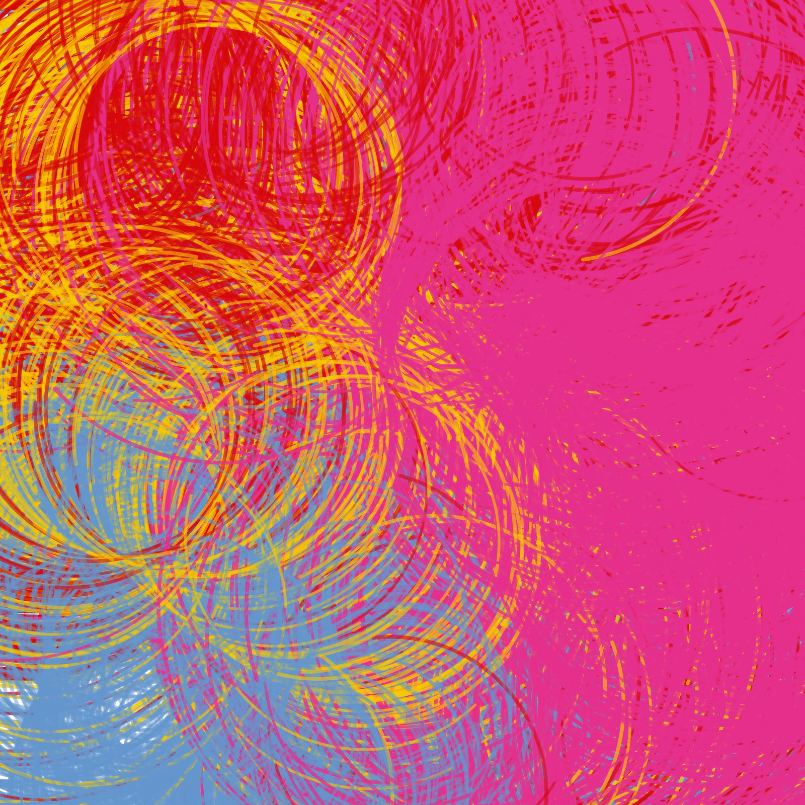

Catalog · series
Node Occupy

Curved Marks NODE, Occupy, seed 3235151222. Mark Walhimer, 2026.
One Machine DNA system, drawn in the browser and built mark by mark over 30 seconds. The same code drives a plotter drawing, a digital screen, smart technical object and technical landscapes. The seed sets every curve, color area and mark.
Layouts: 1600×1600 (1:1) square, 2160×3840 portrait, 8640×2160 landscape (4:1). Video capture of the real-time animation, 60 fps, 30 seconds. HTML, 2D canvas.
Work for this series lives in sketches/node-occupy-2026/. The catalog statement is in catalog/node-occupy-2026/. Submitted to NODE Foundation — OCCUPY, Palo Alto.
#MachineDNA #Machine_DNA
Files in this series
- Curved Marks NODE, Occupy — 1600×1600 (1:1)mark-walhimer-curved-marks-node-occupy.html · ?format=square
- Curved Marks NODE, Occupy — 2160×3840 portraitmark-walhimer-curved-marks-node-occupy.html · ?format=portrait
- Curved Marks NODE, Occupy — 8640×2160 landscape (4:1)mark-walhimer-curved-marks-node-occupy.html · ?format=landscape
- Still at 20 s — 1:1 take 1…-1-1-1-20s.png
- Still at 20 s — 1:1 take 2…-1-1-2-20s.png
- Still at 20 s — 4:1…-4-1-20s.png
- Statementmark-walhimer-curved-marks-node-occupy.txt